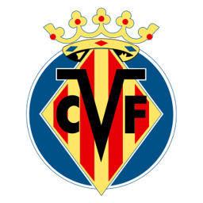
VIEl pequeño gigante europeo
Villarreal CF
1923
Año de fundación del club
El Submarino Amarillo
Una breve historia
Fundado en 1923 en una ciudad de apenas 50,000 habitantes, el Villarreal se convirtió en el ejemplo de club modesto que compite de tú a tú con los grandes de Europa, coronado con la sorprendente conquista de la UEFA Europa League en 2021.
Fieles a los colores
de Villarreal
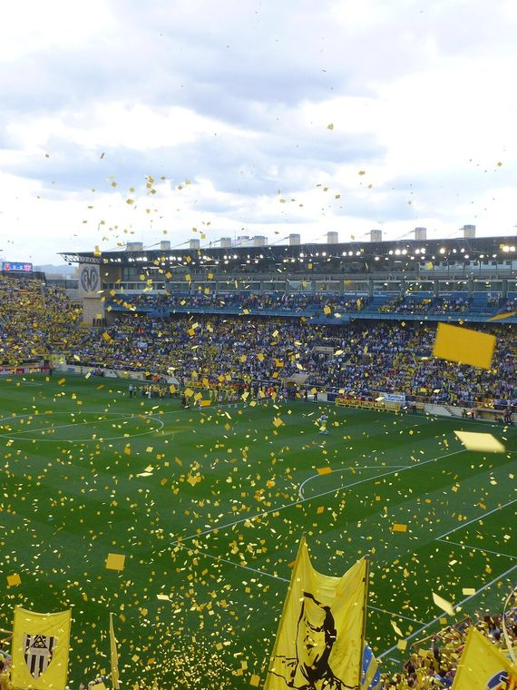
📷Foto pendiente
(villarreal-1.jpg)';" />
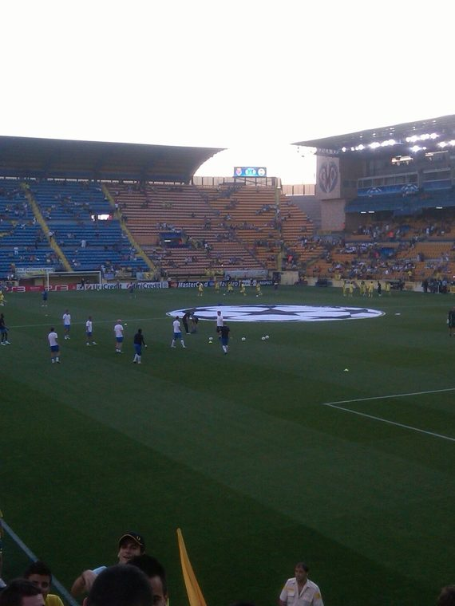
📷Foto pendiente
(villarreal-2.jpg)';" />
Títulos y logros
Vitrina de títulos
0
UEFA Europa League
0
Subcampeón de LaLiga
La rivalidad
El duelo que enciende a la afición
Villarreal CF
VS
Valencia CF
EstadioEstadio de la Cerámica
Capacidad23,008 espectadores
CiudadVillarreal
Club fundado1923
Cómo llegar
Temporada 2026 / 27
Plantilla del primer equipo
Datos de ejemplo — reemplázalos con la plantilla real en data/teams.js.
1
🧑';" />
Júnior R.
Portero
2
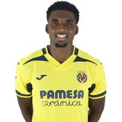
🧑';" /> Costa Defensa
3
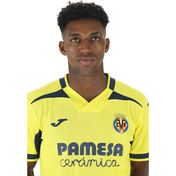
🧑';" /> Freeman Defensa
5
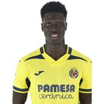
🧑';" /> A. Diatta Centrocampista
6
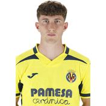
🧑';" /> Pau Navarro Defensa
7
🧑';" />
Gerard
Delantero
8
🧑';" />
Foyth
Defensa
9
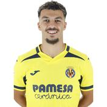
🧑';" /> Mikautadze Delantero
10
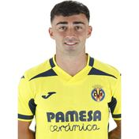
🧑';" /> A. Moleiro Centrocampista
11
🧑';" />
I. Akhomach
Delantero
12
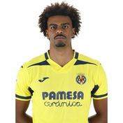
🧑';" /> Renato Veiga Defensa
13
🧑';" />
Ruben Gomez
Portero
14
🧑';" />
Santi C.v.
Centrocampista
15
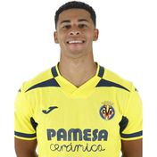
🧑';" /> Mouriño Defensa
16
🧑';" />
Macia
Centrocampista
17
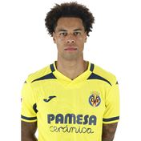
🧑';" /> Buchanan Centrocampista
18
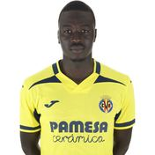
🧑';" /> Gueye Centrocampista
19
🧑';" />
Pepe
Centrocampista
20
🧑';" />
C. Romero
Defensa
21
🧑';" />
Oluwaseyi
Delantero
22
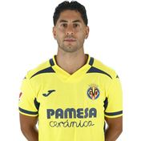
🧑';" /> Ayoze Delantero
23
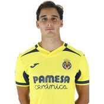
🧑';" /> S. Cardona Defensa
24
🧑';" />
Saliba
Centrocampista
25
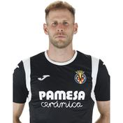
🧑';" /> Gulácsi Portero
27
🧑';" />
Nizar
Centrocampista
29
🧑';" />
A. García
Delantero
30
🧑';" />
Cheikh
Centrocampista
32
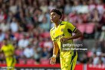
🧑';" /> Bonafé Centrocampista
35
🧑';" />
Kinareikin
Portero